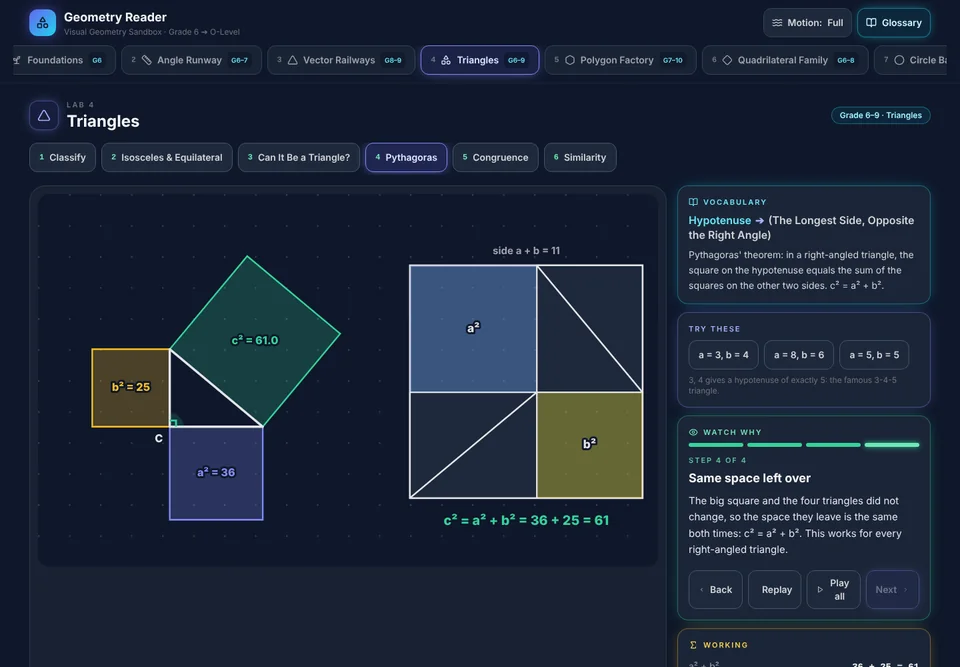
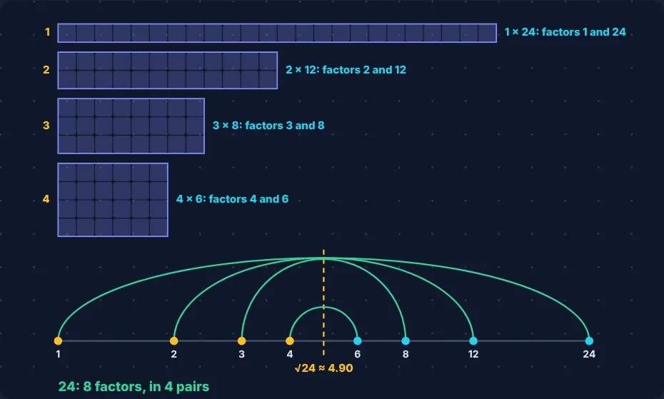
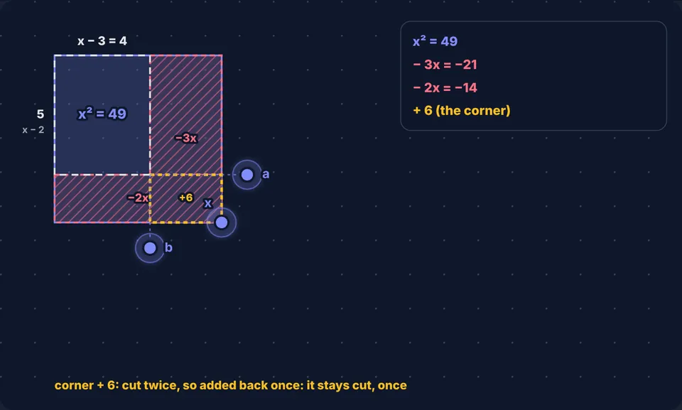

Science Readers · Mathematics wing
Math Reader
Three titles on one engine. In each, the learner moves the figure and watches why a rule is true: shapes in Geometry Reader, numbers in Number Reader, letters in Algebra Reader.
-

Live · in use in teaching
Geometry Reader
From the first idea of a point to trigonometry and vectors, with a Measurement & Units module shared by every wing. 17 labs, 72 topics and 45 visual proofs.
-

Demo · in development
Number Reader
Numbers from first counting to complex numbers: place value, primes, fractions, indices, surds, sequences, logarithms and the Argand plane, each rule proved on a figure the learner moves. 13 labs.
-

Demo · in development
Algebra Reader
From a letter for any number to the quadratic formula: like terms, brackets as rectangles, equations as equal rows, inequalities, elimination and completing the square. The demo shows the stations built so far.
About the two demos
Number Reader and Algebra Reader are titles in development, shown as demos. Each leaves out, for now, the passages that say what particular books, countries or eras do; they return once each is checked against a published source. Neither has yet been used with learners or evaluated. All three titles work without an account, use no trackers, and store nothing on the phone.